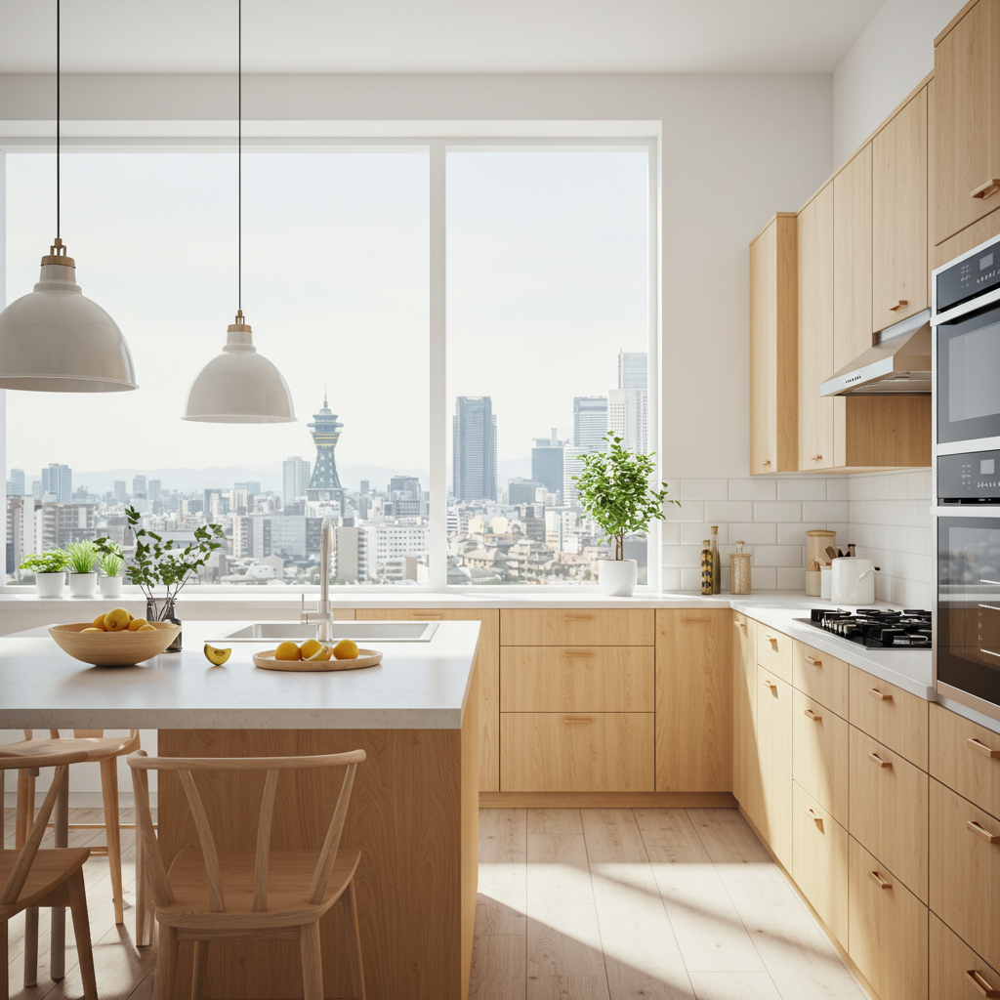
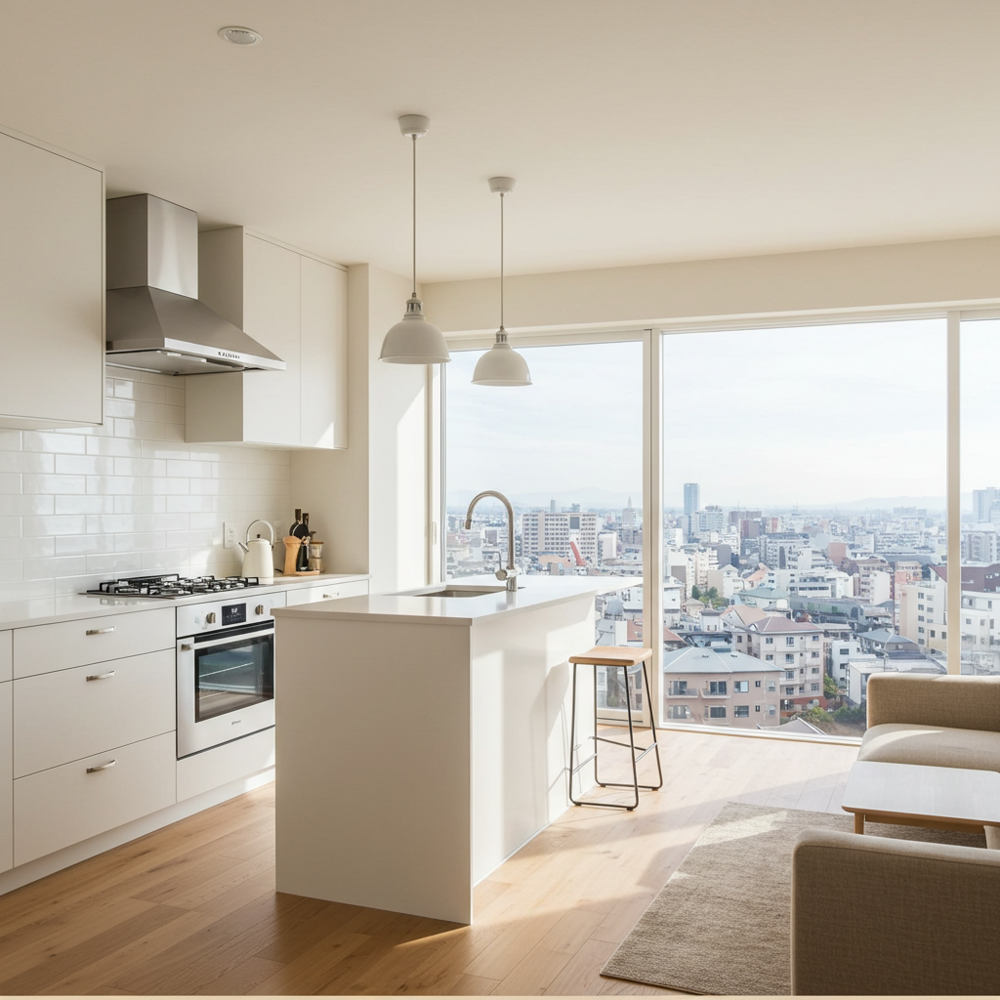
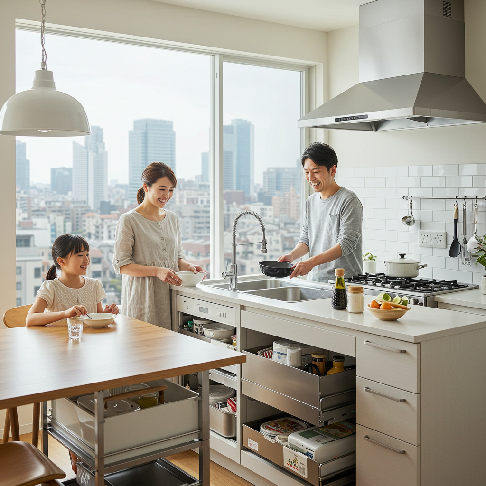
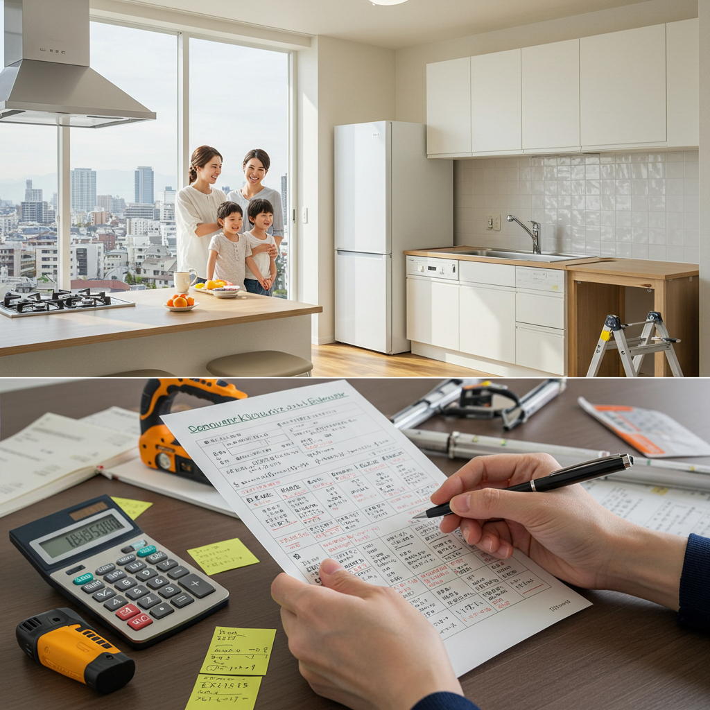
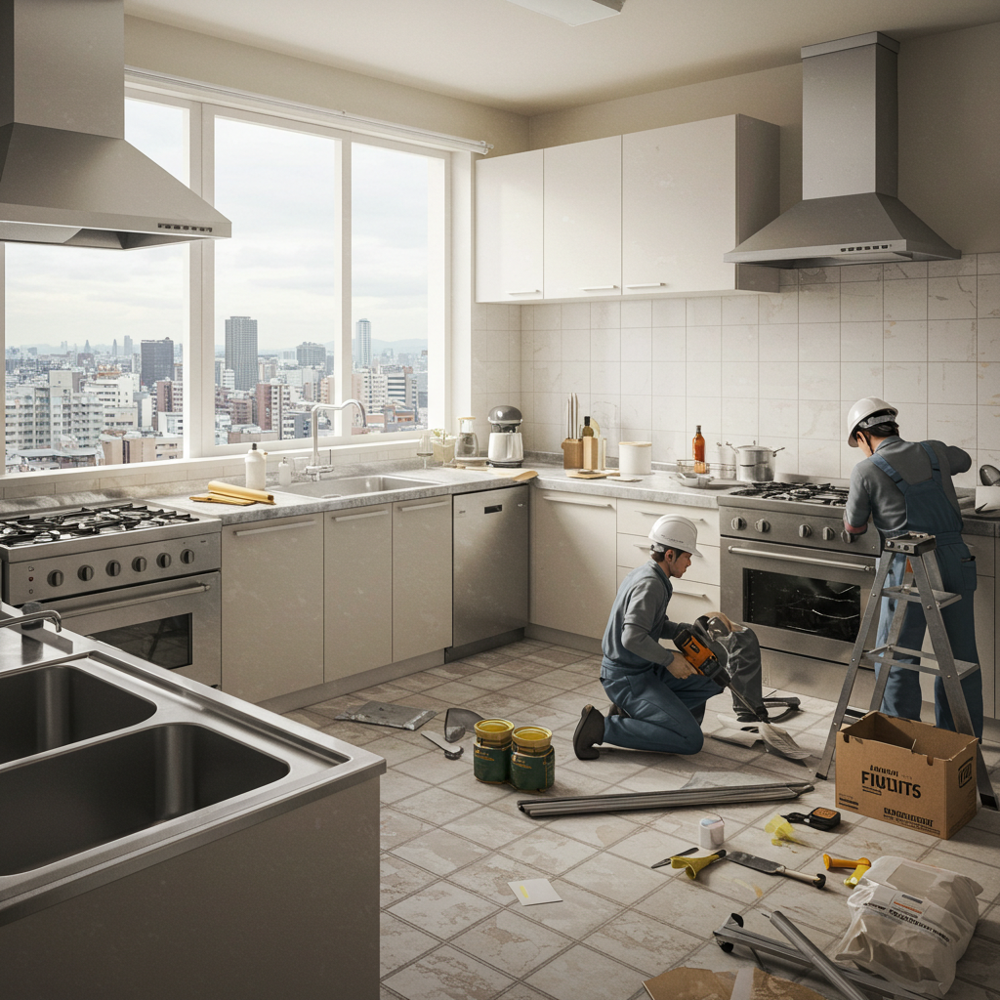
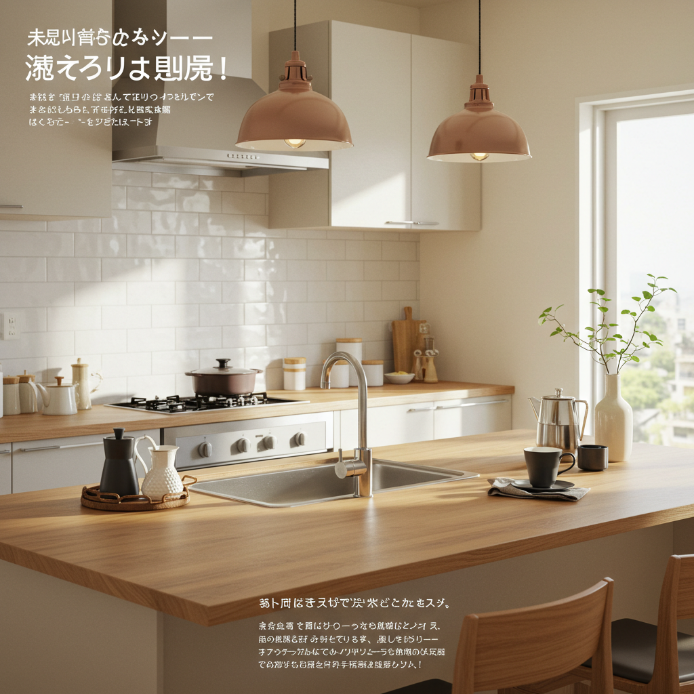

大阪で理想のキッチンリフォーム！失敗しない業者選びと費用ガイド

導入

毎日使うキッチン。それは、ただ料理をするだけの場所ではなく、家族の健康を支え、時には笑顔が集まるコミュニケーションの中心となる、家の中でも特別な空間です。
「もう少し収納があれば、すっきり片付くのに…」
「作業スペースが狭くて、料理をするのが少し億劫…」
「古くなったキッチン、もっと明るくおしゃれな空間にしたいな」
「家族の顔を見ながら料理ができたら、もっと楽しい時間になるはず」
大阪にお住まいのあなたも、今、キッチンに対してこんな風に感じているかもしれません。
暮らしの変化とともに、キッチンに求めるものも変わっていきます。子育てに奮闘する毎日、夫婦二人のゆったりとした時間、友人を招いてのホームパーティー。ライフステージが変わるたびに、「もっとこうだったら良いのに」という想いが生まれるのは、ごく自然なことです。
キッチンリフォームは、そんな日々の小さな不満やストレスを解消し、あなたの暮らしをより豊かで快適なものへと変える、素晴らしいきっかけになります。最新の機能的なシステムキッチン、会話が弾む対面式のレイアウト、お気に入りのデザインで彩られた空間…。想像するだけで、なんだかワクワクしてきませんか？
しかし、いざリフォームを考え始めると、たくさんの疑問や不安が頭をよぎるものです。
「一体、どれくらいの費用がかかるんだろう？」
「どんなリフォーム会社に頼めばいいのか、選び方がわからない」
「工事中はどんな生活になるの？失敗したらどうしよう…」
特に大阪は、多くのリフォーム業者がひしめき合うエリア。選択肢が豊富なだけに、どこに相談すれば良いのか迷ってしまう方も少なくないでしょう。
この記事は、そんな大阪でキッチンリフォームを検討しているあなたのための、いわば「道しるべ」です。リフォームを始める前の準備から、気になる費用相場、信頼できる業者の選び方、そしてリフォーム成功の秘訣まで、一つひとつ丁寧に、わかりやすく解説していきます。
大切なのは、焦らず、じっくりと情報を集め、あなたとご家族にとっての「理想のキッチン」を具体的に描いていくこと。そして、その夢を一緒に形にしてくれる、信頼できるパートナーを見つけることです。
この記事を読み終える頃には、キッチンリフォームへの不安が期待に変わり、成功への第一歩を踏み出すための知識と自信が身についているはずです。さあ、一緒に大阪で叶える、あなただけの理想のキッチンリフォームの旅を始めましょう。
大阪でキッチンリフォームを始める前の準備
「キッチンを新しくしたい！」その想いが固まったら、すぐにリフォーム会社を探し始める前に、少しだけ立ち止まって考えてみましょう。成功するリフォームの秘訣は、この「準備段階」に隠されています。自分たちが今、何に困っていて、リフォームによってどんな暮らしを実現したいのかを明確にすることが、後悔しないための最も重要なステップなのです。この章では、リフォーム計画を具体的に進めるための大切な準備について、一緒に考えていきましょう。
キッチンリフォームで解決できる悩み
まずは、現在のキッチンに対する「不満」や「悩み」を、家族みんなで洗い出してみることから始めましょう。些細なことでも構いません。思いつくままにリストアップしていくと、リフォームで何を優先すべきかが見えてきます。ここでは、多くの方が抱える代表的なお悩みと、リフォームでどのように解決できるかをご紹介します。
1. 収納が少なくて、物があふれている
「調理器具や食器、ストック食材が収まりきらず、カウンターの上がごちゃごちゃ…」これは、キッチンのお悩みで最も多いものの一つです。収納不足は、見た目が悪いだけでなく、作業効率を著しく低下させます。
- リフォームによる解決策：
- 大容量のシステムキッチンへ交換: 最近のシステムキッチンは、収納力が格段に進化しています。デッドスペースになりがちだった足元のスペースを有効活用したフロアコンテナや、引き出しの奥まで無駄なく使えるスライド収納など、工夫が満載です。
- 吊戸棚（ウォールキャビネット）の設置・見直し: 手が届きにくい吊戸棚を、ボタン一つで昇降するタイプに変えるだけで、格段に使いやすくなります。
- パントリー（食品庫）の新設: 壁面を利用してパントリーを設ければ、食品ストックやあまり使わない調理家電などをまとめて収納でき、キッチン全体が驚くほどすっきりします。
2. 作業スペース（ワークトップ）が狭い
「切った食材を置く場所がない」「盛り付けをするスペースが足りない」など、作業スペースの狭さは調理中の大きなストレスになります。特に、お子さんと一緒にお菓子作りをしたり、たくさんの料理を一度に作ったりする際には、切実な問題です。
- リフォームによる解決策：
- L型・U型キッチンへの変更: I型（壁付け）キッチンからL型やU型キッチンへレイアウトを変更することで、作業動線を短くしつつ、ワークトップの面積を大幅に増やすことができます。
- アイランド・ペニンシュラキッチンの導入: リビング・ダイニング側にもカウンターを設けることで、広々とした作業スペースを確保できます。配膳前の仮置きスペースとしても重宝します。
- 作業台の追加: 可動式の作業台や、カウンター下に収納できるワゴンなどを活用するのも一つの手です。
3. 動線が悪く、動きに無駄が多い
「シンクとコンロ、冷蔵庫の距離が遠くて、行ったり来たり…」「二人でキッチンに立つと、ぶつかってしまう」など、動線の悪さは家事の効率を下げ、疲れの原因にもなります。
- リフォームによる解決策：
- ワークトライアングルの最適化: シンク・コンロ・冷蔵庫の3点を結ぶ三角形「ワークトライアングル」の合計距離が3.6m～6.0m程度になるようにレイアウトを見直すことで、無駄な動きが減り、作業効率が格段にアップします。
- レイアウトの変更: 壁付けキッチンを対面式にすることで、リビング・ダイニングへのアクセスがスムーズになり、配膳や片付けが楽になります。
4. 掃除が大変で、汚れが落ちにくい
古いキッチンは、素材の劣化や目地の汚れ、換気扇の油汚れなど、掃除が大変な箇所がたくさんあります。毎日使う場所だからこそ、お手入れのしやすさは非常に重要なポイントです。
- リフォームによる解決策：
- 最新素材の採用: 汚れが付きにくく、拭き取りやすい素材のワークトップ（人造大理石やセラミックなど）や、継ぎ目のない一体成型のシンクを選ぶことで、日々のお手入れが格段に楽になります。
- 高機能なレンジフード（換気扇）: 自動洗浄機能付きのレンジフードなら、面倒なフィルター掃除の手間から解放されます。
- IHクッキングヒーターへの変更: 五徳のないフラットなトッププレートは、吹きこぼれてもサッと拭くだけで綺麗になります。
5. キッチンが暗くて、孤立感がある
壁付けキッチンは、調理中に家族に背を向ける形になるため、「リビングの様子がわからず、孤立感を感じる」「子どもから目が離せない時期は不安」といった声も聞かれます。
- リフォームによる解決策：
- 対面式キッチンへの変更: リビング・ダイニングを見渡せる対面式（アイランド、ペニンシュラ）キッチンにすることで、家族と会話を楽しみながら、またテレビを見ながら料理ができます。小さなお子様がいるご家庭でも、様子を見守りながら家事ができるので安心です。
- 照明計画の見直し: 全体を照らす照明に加え、手元を明るくするダウンライトや、空間をおしゃれに演出するペンダントライトなどを取り入れることで、明るく開放的なキッチンに生まれ変わります。
これらの悩みを整理することで、あなたにとっての「理想のキッチン」の輪郭が、少しずつはっきりとしてくるはずです。
リフォームの種類と期待できる効果
キッチンリフォームと一言で言っても、その内容は多岐にわたります。どこまで手を入れるかによって、費用も工期も、そして得られる効果も大きく変わってきます。ここでは、代表的なリフォームの種類と、それぞれで期待できる効果について詳しく見ていきましょう。ご自身の予算や目的に合わせて、どのタイプのリフォームが最適かを考える参考にしてください。
1. 機器・設備の部分的な交換（プチリフォーム）
キッチン全体はまだ使えるけれど、一部の設備が古くなったり、壊れたりした場合に行うリフォームです。比較的費用を抑えられ、工期も短くて済むのが特徴です。
- ガスコンロ・IHクッキングヒーターの交換:
- 期待できる効果: 最新のコンロは、安全性（Siセンサーによる自動消火機能など）や清掃性（ガラストッププレートなど）が格段に向上しています。また、調理をサポートする便利な機能（温度設定、タイマー、自動炊飯機能など）も豊富で、料理の幅が広がります。
- レンジフード（換気扇）の交換:
- 期待できる効果: 吸引力がアップし、油煙をしっかり排出できるようになります。静音性に優れたモデルや、フィルター掃除の手間が省けるノンフィルタータイプ、自動洗浄機能付きのモデルも人気です。
- 水栓金具の交換:
- 期待できる効果: センサーに手をかざすだけで水が出るタッチレス水栓は、手が汚れている時に非常に便利で、節水効果も期待できます。浄水器内蔵型や、ホースを引き出して使えるシャワーヘッド付きのタイプも人気です。
- ビルトイン食洗機の設置・交換:
- 期待できる効果: 面倒な食器洗いの手間から解放され、家事の時間を大幅に短縮できます。高温洗浄で衛生的、かつ手洗いよりも節水になるというメリットもあります。
2. システムキッチン本体の交換
既存のキッチンを解体・撤去し、新しいシステムキッチンを同じ場所に設置するリフォームです。キッチンの機能性やデザイン性を一新したい場合に最適です。
- 期待できる効果:
- デザインの一新: キャビネットの扉の色や素材、ワークトップの材質などを自由に選べるため、お部屋のインテリアに合わせた、自分好みの空間を実現できます。
- 収納力の大幅アップ: 最新のシステムキッチンは、デッドスペースを極力なくし、収納効率を最大限に高める工夫が凝らされています。物があふれていたキッチンが、すっきりと片付きます。
- 機能性の向上: 最新のシンクやコンロ、レンジフードなどが一体となっているため、使い勝手が良く、お手入れも簡単になります。
3. 内装を含めたキッチンスペース全体のリフォーム
システムキッチンの交換と合わせて、床材や壁紙、天井のクロス、照明なども一新するリフォームです。キッチンの雰囲気をがらりと変えたい場合におすすめです。
- 期待できる効果:
- 理想の空間コーディネート: キッチン本体だけでなく、内装もトータルでコーディネートすることで、より統一感のあるおしゃれな空間が生まれます。
- 機能的な内装材の選択: 床材には、水や油汚れに強く、滑りにくい素材（クッションフロアやフロアタイルなど）を。壁には、汚れが拭き取りやすく、消臭効果のある機能性クロスや、デザイン性の高いキッチンパネルなどを選ぶことができます。
- 明るく快適な空間: 照明計画を見直すことで、手元が明るく作業しやすくなるだけでなく、空間全体の雰囲気も大きく変わります。
4. 間取り変更を伴う大規模リフォーム
壁の撤去や新設、キッチンの移動など、間取りそのものを変更する大掛かりなリフォームです。
- 期待できる効果:
- ライフスタイルの実現: 「壁付けキッチンを対面式にして、LDKを一体感のある空間にしたい」「独立していたキッチンをリビングとつなげて、開放的な空間にしたい」といった、根本的な間取りの悩みを解決できます。
- 動線の抜本的な改善: 家事動線や生活動線を考慮した最適なレイアウトを実現することで、暮らしやすさが劇的に向上します。
- 資産価値の向上: 暮らしやすさが向上することで、住宅そのものの価値を高めることにもつながります。
ただし、間取り変更を伴うリフォームは、費用も工期も大きくなります。また、建物の構造によっては希望通りの変更ができない場合もあるため、専門家であるリフォーム会社と十分に相談することが不可欠です。
大阪でリフォームを検討する際のポイント
全国どこでもリフォームの基本的な考え方は同じですが、ここ大阪でキッチンリフォームを検討する際には、知っておくと役立つ地域特有のポイントがいくつかあります。
1. 大阪の住宅事情を理解する
大阪は、都心部を中心にマンションが多く、また古くからの住宅密集地も少なくありません。ご自宅が戸建てかマンションか、またどのような立地にあるかによって、リフォームの注意点が変わってきます。
- マンションの場合:
- 管理規約の確認は必須: マンションには、住民が守るべき「管理規約」があります。リフォームに関しても、工事可能な範囲や使用できる床材、工事時間帯などが細かく定められていることがほとんどです。特に、キッチンの移動や床材の変更（遮音等級の規定など）は、規約で制限されている場合があります。リフォーム計画を立てる前に、必ず管理組合に確認しましょう。
- 水回り・排気ダクトの制約: キッチンの位置を大きく移動する場合、排水管の勾配や排気ダクトの経路が問題になることがあります。マンションの構造を熟知したリフォーム会社に相談することが重要です。
- 戸建て・住宅密集地の場合:
- 搬入経路の確認: 道が狭い住宅密集地では、新しいキッチンや建材を運び込むトラックが入れない、といったケースも考えられます。事前にリフォーム会社に現地を見てもらい、搬入経路を確認してもらう必要があります。
- 近隣への配慮: 工事中の騒音や振動、車両の駐車などは、ご近所トラブルの原因になりかねません。工事前には、リフォーム会社と一緒に近隣への挨拶回りを行うなど、十分な配慮が求められます。誠実に対応してくれる業者を選ぶことも大切です。
2. 大阪の気候を考慮する
大阪の夏は高温多湿です。キッチンは火や水を使うため、特に湿気や熱がこもりやすい場所。リフォームを機に、快適な環境づくりも検討しましょう。
- 湿気対策: 調湿効果のある壁材（エコカラットなど）を採用したり、カビの発生を抑える内装材を選んだりするのも良いでしょう。
- 換気計画: パワフルな換気扇を選ぶことはもちろん、窓の配置を見直したり、小さな換気扇を増設したりすることで、空気の流れを良くし、熱や湿気を効率的に排出できます。
3. 大阪のショールームを最大限に活用する
大阪の都心部、特に梅田や難波周辺には、TOTO、LIXIL、パナソニック、クリナップ、タカラスタンダードといった大手住宅設備メーカーのショールームが集まっています。カタログだけではわからない、実際の使い心地や質感、色合いを体感できる絶好の機会です。
- ショールームで確認すべきこと:
- 高さと奥行き: ワークトップの高さは、主に使う人の身長に合わせて選ぶのが基本です（身長÷2＋5cmが目安）。実際に立ってみて、無理のない姿勢で作業できるかを確認しましょう。
- 収納の使い勝手: 引き出しの開け閉めのスムーズさ、収納内部の仕様などを実際に触って確かめましょう。
- 素材の質感と色: ワークトップや扉の素材は、照明の当たり方によって見え方が変わります。大きな面で見ると、小さなサンプルとは印象が異なることも多いので、必ず実物で確認しましょう。
週末は混み合うことが多いので、事前に予約をして、アドバイザーに相談しながらじっくりと見学するのがおすすめです。複数のメーカーを比較検討することで、自分たちの理想に最も近いキッチンが見つかるはずです。
大阪のキッチンリフォーム費用と予算

リフォームを考える上で、誰もが最も気になるのが「費用」ではないでしょうか。「だいたい、いくらくらいかかるの？」「予算内で、どこまでできるの？」そんな疑問にお答えするため、この章では大阪におけるキッチンリフォームの費用相場を、リフォームのタイプ別にご紹介します。また、賢く費用を抑えるためのポイントや、知っておくとお得な補助金・減税制度についても詳しく解説していきます。
タイプ別に見るキッチンリフォーム費用相場
キッチンリフォームの費用は、キッチンのグレード、工事の規模、そして選ぶ業者によって大きく変動します。あくまで目安として、ご自身の計画と照らし合わせながら参考にしてください。
1. 部分的な機器交換（約5万円～30万円）
キッチン本体はそのままに、老朽化した設備のみを交換するリフォームです。
- ガスコンロ・IHクッキングヒーター交換: 約10万円～20万円
- ビルトインコンロの交換工事費込みの相場です。製品のグレードによって価格は変動します。
- レンジフード（換気扇）交換: 約10万円～25万円
- プロペラファンからシロッコファンへの変更や、高機能なモデルを選ぶと費用は高くなります。
- 水栓金具交換: 約5万円～10万円
- タッチレス水栓や浄水器一体型など、機能性の高いものほど高価になります。
- ビルトイン食洗機（後付け・交換）: 約15万円～30万円
- 新規で設置する場合は、給排水工事や電気工事が必要になるため、交換よりも費用がかかります。
2. システムキッチン本体の交換（約50万円～150万円）
既存のキッチンを撤去し、新しいシステムキッチンに入れ替える、最も一般的なリフォームです。選ぶシステムキッチンのグレードによって、費用が大きく変わります。
- ベーシックグレード（約50万円～80万円）:
- 機能をシンプルに絞り、材質も標準的なものを使用した、コストパフォーマンスに優れたグレードです。賃貸物件や、機能にあまりこだわりがない方におすすめです。
- ミドルグレード（約80万円～120万円）:
- 最も多く選ばれている人気の価格帯です。デザインの選択肢が豊富で、収納の工夫やお手入れのしやすい素材など、機能性も充実しています。食洗機や浄水器などのオプションも追加しやすくなります。
- ハイグレード（約120万円～150万円以上）:
- デザイン性に優れた海外製キッチンや、セラミックトップ、タッチレス水栓、自動洗浄レンジフードといった最新・最高の機能を盛り込んだ高級グレードです。素材やディテールにこだわり、理想のキッチンを追求したい方向けです。
※上記の費用には、既存キッチンの解体・撤去費、新しいキッチンの組立・設置費、給排水・ガス・電気の接続工事費などが含まれるのが一般的です。
3. 内装工事を含む全体リフォーム（約100万円～250万円）
キッチンの交換と同時に、床・壁・天井の内装工事も行う場合です。
- 上記のキッチン本体交換費用に加えて、以下の内装工事費がプラスされます。
- 床材の張り替え（クッションフロア・フローリングなど）: 約5万円～15万円
- 壁・天井のクロス張り替え: 約5万円～15万円
- キッチンパネルの設置: 約5万円～10万円
- 照明器具の交換・増設: 約3万円～10万円
キッチンスペースの広さや選ぶ内装材によって費用は変動します。内装まで一新することで、空間全体の印象が劇的に変わるため、満足度の高いリフォームになります。
4. 間取り変更を伴う大規模リフォーム（約150万円～）
キッチンの位置を移動したり、壁を撤去してLDKを一体化したりするような大掛かりなリフォームです。
- キッチン本体や内装の費用に加え、以下の工事費用が必要になります。
- 壁の解体・撤去、新設: 約10万円～30万円
- 給排水・ガス管の移設工事: 約10万円～20万円
- 電気配線の移設・増設工事: 約5万円～15万円
- 排気ダクトの延長・移設工事: 約5万円～10万円
建物の構造（木造、鉄骨、RCなど）や、移動距離によって費用は大きく変わります。特にマンションの場合は、配管ルートなどに制約が多く、費用がかさむ傾向にあります。必ず専門家であるリフォーム会社に詳細な現地調査を依頼し、正確な見積もりを取りましょう。
費用を抑えるためのポイントと工夫
少しでも費用を抑えたい、でも満足のいくリフォームにしたい。そう考えるのは当然のことです。ここでは、賢くコストダウンするための具体的な方法をいくつかご紹介します。
1. キッチンのグレードにメリハリをつける
全てを最高級グレードにする必要はありません。自分たちが「絶対にこだわりたい部分」と「標準仕様で十分な部分」を明確にし、予算を重点的に配分しましょう。
- 例：
- 「掃除の手間を減らしたい」→ ワークトップとシンクは汚れがつきにくい高機能な素材を選ぶが、キャビネットの扉は標準グレードにする。
- 「デザインにこだわりたい」→ 見た目の印象を大きく左右する扉の面材や取っ手は好みのものを選び、コンロや水栓は基本的な機能のものにする。
2. 既存のレイアウトを活かす
キッチンの位置やレイアウトを変更すると、給排水管やガス管、電気配線、排気ダクトの移設工事が必要になり、費用が大幅にアップします。既存のレイアウトのまま新しいシステムキッチンに交換するだけでも、使い勝手やデザイン性は大きく向上します。現在の動線に大きな不満がなければ、レイアウトの維持を検討してみましょう。
3. 設備や建材の選び方を工夫する
メーカーのショールームに行くと、最新の魅力的な機能に目移りしてしまいますが、本当に自分たちの暮らしに必要か、冷静に考えてみましょう。
- 型落ち品やアウトレット品を狙う: モデルチェンジの時期には、機能的には全く問題のない旧モデル（型落ち品）が安くなることがあります。また、リフォーム会社によっては、メーカーのアウトレット品などを独自ルートで仕入れられる場合もあります。
- 工務店やリフォーム会社の得意なメーカーを選ぶ: 業者によっては、特定のメーカーの製品を大量に仕入れることで、割引率が高くなっている場合があります。メーカーに強いこだわりがなければ、業者が推奨するコストパフォーマンスの高い製品を選ぶのも一つの手です。
4. 工事の時期を調整する
リフォーム業界にも繁忙期（年末や年度末など）があります。比較的、業者のスケジュールに余裕がある時期（梅雨時や真夏など）に工事を依頼すると、価格交渉がしやすくなる可能性があります。ただし、これは業者によるため、一概には言えません。
5. 複数の業者から相見積もりを取る
これは、コストダウンと適正価格の把握のために最も重要なポイントです。同じ工事内容でも、業者によって見積もり金額は数十万円単位で変わることも珍しくありません。最低でも3社から見積もりを取り、価格だけでなく、提案内容や工事の内訳、担当者の対応などを総合的に比較検討しましょう。
活用したい補助金・減税制度
国や自治体は、特定の条件を満たすリフォームに対して、補助金や減税制度を設けています。これらを活用することで、リフォーム費用を実質的に抑えることが可能です。制度は年度ごとに内容が変わることが多いため、必ず最新の情報を確認するようにしましょう。
1. 国の補助金制度
省エネ性能の向上やバリアフリー化など、国が推進するテーマに沿ったリフォームが対象となることが多いです。
- 子育てエコホーム支援事業（2024年度の例）:
- 省エネ改修（高断熱窓への交換、高効率給湯器の設置など）や、子育て対応改修（ビルトイン食洗機の設置、掃除しやすいレンジフードへの交換など）が対象となります。キッチンリフォームに関連する項目も多く含まれています。
- 長期優良住宅化リフォーム推進事業:
- 住宅の性能を向上させ、長く安心して住めるようにするためのリフォームを支援する制度です。耐震改修や省エネ改修など、比較的大規模なリフォームが対象となります。
2. 大阪府や各市町村の補助金制度
お住まいの自治体が、独自にリフォーム補助金制度を設けている場合があります。
- 例：
- 大阪市の「大阪市安心・安全・快適住宅リフォーム補助事業」
- 堺市の「堺市住宅・建築物耐震改修補助金」
- その他、各市町村で高齢者向けのバリアフリー改修や、三世代同居・近居支援などのためのリフォーム補助金がある場合があります。
これらの制度は、申請期間や予算額が限られていることがほとんどです。「お住まいの市町村名＋リフォーム 補助金」などのキーワードで検索し、自治体のホームページで最新情報を確認するか、リフォーム会社に相談してみましょう。補助金の申請手続きに慣れている業者を選ぶこともポイントです。
3. 減税制度
リフォームの内容によっては、所得税や固定資産税が控除される制度もあります。
- リフォーム促進税制（所得税の控除）:
- 耐震、バリアフリー、省エネ、三世代同居対応、長期優良住宅化リフォームを行った場合、工事費用の一部がその年の所得税から控除されます。
- 住宅ローン減税:
- 10年以上のローンを組んでリフォームを行った場合、年末のローン残高に応じて一定額が所得税から控除されます。
- 固定資産税の減額:
- 耐震、バリアフリー、省エネ改修を行った場合、翌年度の家屋の固定資産税が減額される措置です。
これらの制度を利用するには、確定申告が必要です。必要な書類や手続きについては、リフォーム会社や税務署に確認しましょう。
キッチンリフォームのメリット

キッチンリフォームは、決して安くはない投資です。しかし、それに見合う、あるいはそれ以上の多くのメリットを日々の暮らしにもたらしてくれます。古くなった設備を新しくするだけでなく、毎日の家事を楽しく、快適にし、家族のコミュニケーションを豊かにする。そんな素晴らしい変化が待っています。この章では、キッチンリフォームがもたらす具体的なメリットについて、詳しくご紹介します。
デザイン性・機能性の向上で快適な空間に
毎日立つ場所だからこそ、キッチンの見た目や使い勝手は、気分を大きく左右します。リフォームによって、キッチンは単なる作業場から、心安らぐお気に入りの空間へと生まれ変わります。
1. 理想のデザインで、立つのが楽しくなるキッチンへ
古い、暗い、といった印象のキッチンも、リフォームで一新できます。まるでインテリア雑誌の1ページのような、おしゃれで洗練された空間を実現できるのが、リフォームの大きな魅力です。
- 豊富な選択肢から選べる:
- 扉の色・素材: 温かみのある木目調、スタイリッシュな鏡面仕上げ、マットで落ち着いた質感など、扉のデザインを変えるだけでキッチンの印象はがらりと変わります。リビングのインテリアとテイストを合わせることで、LDK全体に統一感が生まれます。
- ワークトップの材質: 耐久性に優れたステンレス、デザインが豊富で人気の人工大理石、高級感と重厚感が魅力の天然石、そして近年注目されている熱や傷に非常に強いセラミックなど、それぞれの素材に特徴があります。デザイン性だけでなく、お手入れのしやすさや耐久性も考慮して選びましょう。
- 取っ手のデザイン: 細かな部分ですが、取っ手のデザインも空間の印象を左右する重要な要素です。シャープなラインハンドル、アンティーク調のつまみなど、ディテールにこだわることで、より自分らしいキッチンに仕上がります。
2. 最新の機能で、日々の調理を快適にサポート
最近のキッチン設備は、驚くほど進化しています。これまで「面倒だな」と感じていた作業が、最新機能のサポートによって、ぐっと楽に、そして楽しくなります。
- タッチレス水栓:
- センサーに手をかざすだけで水を出したり止めたりできるので、ハンバーグをこねた後の汚れた手でも、蛇口を汚すことなく使えます。こまめに水を止められるので、節水効果も期待できます。
- 進化したシンク:
- 水がスムーズに流れるように設計されたシンクは、汚れが溜まりにくく、お手入れが簡単です。また、調理中の水はね音を軽減する静音設計のシンクなら、リビングでくつろぐ家族に気兼ねなく洗い物ができます。
- 高機能なコンロ（IH・ガス）:
- IHクッキングヒーターは、火を使わない安全性と、五徳がなく掃除がしやすい点が魅力です。温度設定やタイマー機能を使えば、煮込み料理や揚げ物も失敗知らず。ガスコンロも、鍋を置くだけで自動で火加減を調整してくれる機能や、グリルで多彩な料理が楽しめるモデルなど、進化を遂げています。
- 掃除が簡単なレンジフード:
- 油汚れでベトベトになりがちなレンジフードの掃除は、キッチン家事の中でも特に憂鬱なものの一つ。フィルターのないノンフィルタータイプや、お湯をセットしてボタンを押すだけでファンを自動洗浄してくれる機能が付いたモデルを選べば、面倒な掃除の手間から解放されます。
これらの機能は、一つひとつは小さな変化かもしれませんが、毎日の積み重ねで家事の負担を大きく軽減し、心と時間のゆとりを生み出してくれます。
収納力アップと家事効率の改善
「キッチンが片付かない」「料理に時間がかかる」といったお悩みは、収納と動線を見直すことで劇的に改善できます。リフォームは、キッチンの根本的な使い勝手を向上させる絶好の機会です。
1. 考え抜かれた収納で、すっきり片付くキッチンに
物があふれ、どこに何があるかわからないキッチンでは、調理を始める前から気分が滅入ってしまいます。最新のシステムキッチンは、収納の「量」と「質」の両面で、片付けの悩みを解決してくれます。
- デッドスペースを活かす大容量収納:
- 従来は開き扉で奥の物が取り出しにくかったシンク下やコンロ下のスペースも、今は引き出し式のフロアコンテナが主流です。奥の物まで一目で見渡せ、重い鍋やフライパンも楽に出し入れできます。
- 足元の巾木（はばき）部分まで収納スペースとして活用できるキッチンもあり、収納量は格段にアップします。
- 使う場所に使うものを置ける、考えられた設計:
- コンロの近くには調味料を立てて収納できるスパイスラック、シンク下には包丁やまな板を整理してしまえるポケットなど、調理の流れに合わせて効率的に収納できる工夫が満載です。
- パントリーやカップボードで、さらなる収納力:
- キッチン本体だけでなく、壁面を利用してパントリー（食品庫）やカップボード（食器棚）を設置すれば、ストック食品や普段使わない調理家電、来客用の食器などをまとめて収納できます。キッチン周りがすっきりとし、作業スペースを広く確保することにもつながります。
2. 最適な動線で、無駄なくスムーズに動ける
料理は、「冷蔵庫から食材を出す→シンクで洗う・切る→コンロで加熱調理する」という一連の流れで行われます。この動線がスムーズであるかどうかが、家事効率を大きく左右します。
- ワークトライアングルの改善:
- シンク・コンロ・冷蔵庫の3点を結ぶ「ワークトライアングル」が、正三角形に近いほど効率が良いとされています。リフォームでこの3点の配置を見直すことで、調理中の移動距離が短くなり、無駄な動きが減って疲れにくくなります。
- 複数人でも作業しやすいレイアウト:
- アイランドキッチンやペニンシュラキッチンは、両側からアクセスできるため、夫婦で一緒に料理をしたり、お子さんがお手伝いしたりする際にも、窮屈さを感じません。家族みんなでキッチンに立つ時間が増え、コミュニケーションの機会も自然と生まれます。
- 配膳・片付けの効率化:
- 対面式のキッチンなら、カウンター越しにダイニングテーブルへ料理をさっと渡せます。また、食後の食器もシンクまで運びやすく、片付けがスムーズになります。
リフォームによって家事効率が上がれば、時間に余裕が生まれます。その時間を、趣味や家族との団らんに使うことができる。これも、リフォームがもたらす大きな価値の一つと言えるでしょう。
安全性・省エネ性能の改善で安心
毎日使う場所だからこそ、キッチンの安全性は軽視できません。また、地球環境への配慮や家計のことを考えると、省エネ性能も重要なポイントです。リフォームは、家族みんなが安心して、そして経済的に暮らすための大切な一歩となります。
1. 最新の安全機能で、ヒヤリハットを防ぐ
古いキッチンには、思わぬ危険が潜んでいることがあります。特に、火を使うコンロ周りや、地震時の対策は重要です。
- コンロの安全性向上:
- 現在のガスコンロには、鍋の焦げ付きを検知して自動で消火したり、火が消えるとガスを自動で遮断したりする「Siセンサー」の搭載が義務付けられています。うっかり火を消し忘れても安心です。
- IHクッキングヒーターは、火を使わないため、衣服への着火や火傷のリスクが低減します。小さなお子様や高齢のご家族がいるご家庭でも安心です。チャイルドロック機能が付いているものも多くあります。
- 地震対策:
- 地震の揺れを感知すると、自動で扉をロックして収納物の飛び出しを防ぐ「耐震ラッチ」付きの吊戸棚が標準装備されているキッチンが増えています。食器の落下による二次災害を防ぎます。
- バリアフリー対応:
- 車椅子でも作業がしやすいように、シンク下のスペースを確保したキッチンや、高さを調整できるワークトップなど、高齢になっても安心して使い続けられる工夫も取り入れることができます。
2. 省エネ設備で、光熱費を節約
「リフォーム費用はかかるけれど、その後のランニングコストは抑えたい」というのが本音ではないでしょうか。最新のキッチン設備は、環境に優しく、家計にも優しい省エネ性能を備えています。
- 節水型水栓:
- 水に空気を含ませることで、少ない水量でも満足感のある洗い心地を実現する水栓や、手元でこまめに止水できるスイッチ付きの水栓など、無駄な水の使用を抑える工夫がされています。
- 高効率な給湯器:
- キッチンリフォームと同時に、給湯器を「エコジョーズ」や「エコキュート」といった高効率なものに交換することで、ガス代や電気代を大幅に削減できる可能性があります。
- LED照明:
- 従来の蛍光灯や白熱電球に比べて、LED照明は消費電力が少なく、寿命も長いため、電気代の節約と交換の手間を省くことができます。
リフォームは、目に見える快適さだけでなく、目には見えない「安心」と「お得」をもたらしてくれます。長期的な視点で見れば、日々の暮らしの質を高め、家計を助けてくれる、非常に価値のある投資なのです。
キッチンリフォームのデメリットと注意点

理想のキッチンを夢見て、期待に胸を膨らませる一方で、リフォームにはいくつかのデメリットや注意すべき点も存在します。これらを事前に理解し、対策を立てておくことが、トラブルを未然に防ぎ、「こんなはずじゃなかった」という後悔をなくすために非常に重要です。この章では、リフォームに伴う現実的な課題と、それらを乗り越えるための具体的な方法について考えていきましょう。
工事期間中の生活への影響
キッチンリフォームは、数日間で終わるものから数週間に及ぶものまで様々ですが、工事期間中は普段通りの生活が送れなくなることを覚悟しておく必要があります。特にキッチンは、食事という生活の根幹を支える場所だけに、その影響は小さくありません。
1. キッチンが使えない期間の食事問題
工事が始まると、当然ながらキッチンで調理をしたり、洗い物をしたりすることはできなくなります。システムキッチンの交換だけなら3～5日程度、内装工事やレイアウト変更が伴う場合は1週間以上かかることもあります。この期間の食事をどうするか、あらかじめ家族で話し合っておきましょう。
- 対策案：
- 外食や中食（お弁当・惣菜）の活用: 毎日のこととなると費用がかさみますが、割り切って活用するのが最も手軽な方法です。近所のお気に入りのお店や、テイクアウトできるお店をリストアップしておくと良いでしょう。
- 簡易的な調理環境の確保: リビングの一角などに、カセットコンロや電気ポット、電子レンジなどを設置し、簡単な調理ができるスペースを確保します。レトルト食品や冷凍食品、インスタント食品などをストックしておくと便利です。
- 親戚や友人の家を頼る: 近くに頼れる方がいれば、一時的に食事の準備をさせてもらうなどの協力をお願いするのも一つの手です。
- 工事期間の短い業者を選ぶ: 業者によっては、効率的な工程管理で工事期間を短縮する工夫をしている場合もあります。契約前に、おおよその工期を確認しておきましょう。
2. 冷蔵庫や食器棚の移動と片付け
工事を行うには、キッチン周辺を空にする必要があります。中身がたくさん入った冷蔵庫や食器棚の移動は、想像以上に大変な作業です。
- 対策案：
- 一時的な置き場所の確保: 冷蔵庫や食器棚をどこに移動させるか、事前に決めておく必要があります。リビングや隣の和室などが一般的ですが、生活動線を妨げないように配置を考えましょう。冷蔵庫は電源が必要なので、コンセントの位置も確認が必要です。
- 食器類の梱包と保管: 食器は、割れないように新聞紙などで丁寧に包み、段ボール箱に詰めて保管します。工事期間中に使う最低限の食器は、すぐに取り出せるように分けておくと便利です。
- これを機に断捨離: 長年使っていない調理器具や食器、賞味期限切れの食品などを整理する絶好の機会と捉え、思い切って断捨離するのもおすすめです。新しいキッチンをすっきりと使い始めることができます。
3. 騒音・粉塵・臭いと近隣への配慮
リフォーム工事には、解体時の騒音や木材を切る音、ホコリや塗料の臭いなどがつきものです。自宅内だけでなく、ご近所にも迷惑をかけてしまう可能性があります。
- 対策案：
- 養生の徹底: リフォーム会社には、キッチンと他の部屋との間にビニールシートを張るなど、粉塵が広がらないようにしっかりと養生してもらうよう依頼しましょう。家具や家電にもカバーをかけてもらうと安心です。
- 事前の近隣挨拶: 工事が始まる前に、リフォーム会社の担当者と一緒に、両隣や上下階の住民へ挨拶に伺いましょう。工事の期間や時間帯、連絡先などを伝えておくことで、理解を得やすくなり、トラブルを未然に防ぐことができます。
- 工事中の換気: 天気の良い日は窓を開けるなどして、こまめに換気を行い、臭いがこもらないようにしましょう。
想定外の追加費用が発生する可能性
リフォームにおいて最も避けたいトラブルの一つが、見積もり金額を超えた「追加費用」の発生です。ある程度の予備費を見込んでおくことは大切ですが、なぜ追加費用が発生するのか、その原因を知っておくことで、リスクを最小限に抑えることができます。
1. 解体して初めてわかる、建物の内部状況
見積もりは、あくまで現状で見える範囲を元に作成されます。しかし、壁や床を剥がしてみると、想定外の問題が見つかることがあります。これは、経験豊富な業者であっても完全には予測できない部分です。
- よくある例：
- 構造材の腐食やシロアリ被害: 床下の土台や壁の中の柱が、湿気で腐っていたり、シロアリの被害にあっていたりするケース。補修や補強のための追加工事が必要になります。
- 断熱材の欠損: 壁の中に断熱材が入っていなかったり、劣化して機能していなかったりする場合。これを機に断熱材を充填することで、快適性は向上しますが、追加費用が発生します。
- 配管の著しい劣化: 給排水管がサビや詰まりで劣化しており、交換が必要だと判断される場合。
- アスベスト（石綿）の含有: 2006年以前に建てられた住宅の場合、古い建材にアスベストが含まれている可能性があります。その場合、専門業者による特別な除去作業が必要となり、高額な追加費用がかかります。
2. プランの変更や追加要望
工事が進む中で、「やっぱり、ここの壁紙は違う色にしたい」「ここに棚を追加で付けてほしい」といった要望が出てくることもあります。
- 注意点：
- 工事のどの段階で変更を依頼するかによって、追加費用の額は大きく変わります。材料を発注した後や、既に施工が終わった部分のやり直しは、費用が高額になりがちです。
- 安易な口約束は避け、変更や追加を依頼する際は、必ず担当者にその内容と追加費用、工期の延長について書面で確認し、納得した上で依頼するようにしましょう。
3. マンション特有の制約
マンションリフォームでは、管理規約や建物の構造上の制約から、当初の計画通りに進められず、工法や部材の変更が必要になることがあります。
- 例：
- 排気ダクトのルートが想定と異なり、延長や迂回が必要になった。
- 床下のスペースが想定より狭く、排水管の勾配を確保するために特別な工事が必要になった。
追加費用への備え
このような不測の事態に備え、リフォーム総予算の10～20%程度を「予備費」として確保しておくことを強くお勧めします。何もなければ他のことに使えますし、万が一の時にも慌てず、必要な工事にしっかりと対応することができます。
失敗しないための事前準備と対策
リフォームの成功は、いかに周到な準備ができるかにかかっています。業者任せにせず、自分たちで主体的に計画を進める意識を持つことが大切です。
1. 家族全員でのイメージ共有と優先順位付け
「誰が」「いつ」「どのように」キッチンを使うのか、家族構成やライフスタイルを元に、新しいキッチンでの暮らしを具体的にシミュレーションしてみましょう。
- 現状の不満と要望のリストアップ: 前述したように、まずは現在のキッチンの良い点・悪い点を全員で書き出します。「収納が足りない」「暗い」「動線が悪い」といった不満と、「対面式にしたい」「掃除を楽にしたい」「食洗機が欲しい」といった要望を整理します。
- 優先順位の決定: 全ての要望を叶えようとすると、予算が大幅にオーバーしてしまいます。リストアップした項目の中から、「これだけは絶対に譲れない」というものに優先順位をつけましょう。これが、業者との打ち合わせや、仕様を決める際の重要な判断基準になります。
2. ショールームでの徹底的な実物確認
カタログやウェブサイトの写真だけで決めてしまうのは、失敗のもとです。必ずショールームに足を運び、実物に触れて、使い勝手を体感しましょう。
- チェックポイント：
- ワークトップの高さ: スリッパを履く、など普段の状況を想定して高さを確認します。
- 収納の開閉: 引き出しの重さや、扉の開き方、収納内部のレイアウトなどを実際に試します。
- 質感と色味: 照明の下で、素材の質感や色味を確認します。小さなサンプルと大きな面では印象が異なることを念頭に置きましょう。
- 手持ちの調理器具が入るか: メジャーを持参し、今使っている鍋やフライパン、調理家電などがきちんと収まるか、シミュレーションしてみるのも有効です。
3. 業者との綿密な打ち合わせと記録
リフォーム会社は、あなたの夢を形にする大切なパートナーです。コミュニケーションを密にし、認識のズレがないように進めましょう。
- 要望は具体的に伝える: 「おしゃれなキッチン」といった曖昧な表現ではなく、雑誌の切り抜きやSNSの画像などを見せながら、「こんな雰囲気の、この素材を使ったキッチンにしたい」と具体的に伝えましょう。
- 疑問点はその場で解消: 少しでも「？」と思ったことは、遠慮せずに質問しましょう。専門用語でわからないことがあれば、わかるまで説明を求めます。
- 打ち合わせ内容は記録に残す: 打ち合わせの際にはメモを取り、決定事項や確認事項を記録しておきましょう。業者によっては「打ち合わせ記録」を作成してくれる場合もあります。言った・言わないのトラブルを防ぐために非常に重要です。
これらの準備を丁寧に行うことが、デメリットやリスクを最小限に抑え、満足のいくキッチンリフォームを実現するための確実な道筋となるのです。
信頼できるリフォーム業者の選び方
キッチンリフォームの成功は、良いリフォーム業者と出会えるかどうかにかかっていると言っても過過言ではありません。しかし、大阪には数多くのリフォーム業者が存在し、どこに頼めば良いのか迷ってしまう方も多いでしょう。価格の安さだけで選んでしまうと、後々トラブルに発展するケースも少なくありません。ここでは、あなたの理想のキッチンを安心して任せられる、信頼できるパートナーを見つけるための具体的なポイントを解説します。
複数業者からの見積もりと内容比較
「相見積もり（あいみつもり）」を取ることは、業者選びの基本中の基本です。面倒に感じるかもしれませんが、この一手間をかけることで、多くのメリットが得られます。
1. なぜ相見積もりが必要なのか？
- 適正価格の把握: 同じ工事内容でも、業者によって見積もり金額は異なります。複数の見積もりを比較することで、そのリフォーム内容に対するおおよその相場観が養われ、提示された金額が適正かどうかを判断する基準になります。
- 提案内容の比較: 優れた業者は、こちらの要望をただ聞くだけでなく、プロの視点から「こうした方がもっと使いやすくなりますよ」といったプラスアルファの提案をしてくれます。各社の提案内容を比較することで、自分たちでは思いつかなかったアイデアに出会えたり、より暮らしにフィットしたプランを見つけられたりします。
- 担当者との相性の確認: リフォームは、担当者と二人三脚で進めていくプロジェクトです。現地調査や見積もり説明の際の対応を通じて、こちらの話を親身に聞いてくれるか、質問に的確に答えてくれるかなど、信頼関係を築ける相手かどうかを見極めることができます。
2. 相見積もりは「3社」が目安
多すぎると比較検討が大変になり、少なすぎると十分な比較ができません。まずは3社程度に絞って、見積もりを依頼するのがおすすめです。
3. 見積書のチェックポイント
見積書は、単に総額だけを見てはいけません。詳細な内訳をしっかりと確認し、不明な点があれば必ず質問しましょう。信頼できる業者の見積書は、誰が見てもわかりやすく、詳細に記載されています。
- 「一式」表記に注意: 「○○工事一式」といった大雑把な表記が多い見積書は要注意です。どのような材料をどれだけ使い、どのような工事を行うのかが不明確で、後々のトラブルの原因になりかねません。
- 商品名・型番の明記: 使用するシステムキッチンや設備、建材のメーカー名、商品名、型番、定価、数量などが具体的に記載されているかを確認しましょう。これにより、希望通りのものが使われるのか、グレードが下げられていないかなどをチェックできます。
- 工事内容の内訳: 「解体撤去工事」「木工事」「内装工事」「設備工事」など、工事項目ごとに単価と数量が明記されているかを確認します。どのような作業にどれくらいの費用がかかるのかが明確になります。
- 諸経費の内訳: 「現場管理費」「廃材処分費」「運搬費」などの諸経費が含まれています。この項目が「諸経費一式」とされている場合は、その内訳について説明を求めましょう。
- 有効期限の確認: 見積書には通常、有効期限が記載されています。資材価格の変動などがあるため、期限が過ぎると金額が変わる可能性があることを理解しておきましょう。
価格が安いことだけが正義ではありません。なぜその金額になるのか、その根拠が明確で、提案内容に納得できる、信頼のおける業者を選ぶことが何よりも大切です。
実績と専門性の確認ポイント
大切な我が家のリフォームを任せるのですから、その業者が十分な実績と専門知識を持っているかどうかを見極めることは非常に重要です。ホームページやパンフレット、担当者との会話の中から、以下の点を確認してみましょう。
1. キッチンリフォームの施工実績
- 事例の豊富さ: ホームページなどで、キッチンリフォームの施工事例が豊富に掲載されているかを確認しましょう。特に、自分たちが希望するようなテイスト（モダン、ナチュラルなど）や、似たような間取り、同じマンションでのリフォーム事例などがあると、非常に参考になります。
- ビフォーアフターとお客様の声: 単に綺麗な完成写真だけでなく、リフォーム前の課題（ビフォー）が、どのように解決されたのか（アフター）がわかる事例は、その業者の提案力を示しています。また、実際に工事を依頼したお客様の声（アンケートやインタビュー）は、業者の信頼性を測る上で貴重な情報源となります。
2. 建設業許可や関連資格の有無
- 建設業許可: 500万円以上（税込）のリフォーム工事を請け負うには、都道府県知事または国土交通大臣から「建設業許可」を受ける必要があります。この許可の有無は、業者の規模や信頼性の一つの目安となります。
- 保有資格: 担当者や社内に、建築士、建築施工管理技士、インテリアコーディネーター、キッチンスペシャリストといった専門資格を持つスタッフが在籍しているかどうかも、専門性の高さを判断する材料になります。資格がすべてではありませんが、体系的な知識を持っている証となります。
3. 担当者の知識と提案力
最終的にリフォームを成功に導くのは、現場を動かす「人」です。特に、打ち合わせから工事完了まで窓口となる担当者の能力は非常に重要です。
- ヒアリング力: こちらの漠然とした要望や悩みを丁寧に聞き出し、その本質を的確に汲み取ってくれるか。
- 提案力: メリットだけでなく、デメリットやリスクについても正直に説明してくれるか。こちらの要望に対して、プロならではの視点で、より良い選択肢や代替案を提案してくれるか。
- コミュニケーション能力: 専門的な内容を、素人にもわかりやすい言葉で説明してくれるか。レスポンスが早く、報告・連絡・相談がしっかりしているか。
「この人になら、安心して任せられる」と心から思える担当者と出会うことが、理想の業者選びにつながります。
アフターサービス・保証の重要性
リフォームは、工事が終わればすべて完了、というわけではありません。万が一、工事後に不具合が発生した場合に、どのような対応をしてくれるのか。アフターサービスや保証制度の充実は、その業者が自社の仕事に責任を持っているかどうかの表れです。契約前に必ず確認しておきましょう。
1. 保証の内容と期間
- メーカー保証と自社保証: キッチン設備自体には、メーカーによる保証（通常1～2年）が付いています。それに加えて、リフォーム会社が独自に設けている工事部分に対する保証（自社保証）があります。この自社保証の内容が重要です。
- 保証書の発行: 保証の対象となる範囲（どの部分の、どのような不具合が対象か）と、保証期間（1年、5年、10年など）が明記された「保証書」を発行してくれるかどうかを必ず確認しましょう。口約束ではなく、書面で残すことが大切です。
2. アフターフォロー体制
- 定期点検の有無: 引き渡し後、半年、1年といったタイミングで、不具合がないかを確認する定期点検を実施している業者は、非常に信頼性が高いと言えます。
- トラブル時の対応: 水漏れなど、緊急のトラブルが発生した際に、迅速に対応してくれる体制が整っているか。連絡先や対応の流れを事前に確認しておくと安心です。地元に根ざした業者であれば、フットワーク軽く駆けつけてくれることが期待できます。
3. リフォーム瑕疵（かし）保険への加入
- これは、リフォーム工事に欠陥（瑕疵）が見つかった場合に、その補修費用を保険金でまかなうことができる制度です。万が一、リフォーム会社が倒産してしまった後でも、保証が受けられるという大きなメリットがあります。
- この保険に加入できるのは、国土交通大臣が指定した保険法人の審査をクリアした事業者だけです。業者がこの保険に加入しているか、または加入を提案してくれるかは、信頼性を測る上での一つの大きな指標となります。
業者選びは、リフォームの成否を分ける最も重要なステップです。価格、提案力、実績、そしてアフターサービスまで、総合的な視点でじっくりと比較検討し、心から信頼できるパートナーを見つけてください。
キッチンリフォーム作業の流れ

「リフォームって、何から始めたらいいの？」「契約してから、どんな風に進んでいくの？」リフォームが初めての方にとっては、全体の流れが見えにくいと不安に感じるかもしれません。しかし、一連のステップを事前に把握しておくことで、それぞれの段階で何をすべきかが明確になり、落ち着いてリフォームを進めることができます。ここでは、最初の相談から工事完了、そして引き渡しまでの一般的な流れを、順を追って詳しく解説します。
相談から契約までのステップ
この段階は、理想のキッチンを形にするための土台を作る、非常に重要な期間です。焦らず、じっくりと進めていきましょう。
Step 1：情報収集とイメージの具体化（リフォーム検討開始～1ヶ月）
まずは、自分たちの理想のキッチン像を固めていくことから始めます。
- 情報収集: インターネットの施工事例サイト（Houzz、SUVACOなど）、住宅雑誌、メーカーのカタログ、InstagramやPinterestなどのSNSを活用し、「いいな」と思うキッチンの写真をたくさん集めましょう。
- 家族会議: 集めた情報を元に、家族で「どんなキッチンにしたいか」を話し合います。デザインの好み、必要な機能、現在のキッチンの不満点、リフォームで実現したいことなどを共有し、要望をリストアップします。この時、予算の上限も大まかに決めておくと、その後の話がスムーズに進みます。
- ショールーム見学: 実際にメーカーのショールームに足を運び、実物を見て、触れて、使い勝手を体感します。これにより、イメージがより具体的になります。
Step 2：リフォーム会社探しと相談（1～2週間）
イメージが固まってきたら、いよいよリフォーム会社を探し始めます。
- 業者探し: インターネット検索、リフォーム紹介サイト、知人からの紹介、地域の情報誌など、様々な方法で候補となる会社を3社程度リストアップします。
- 問い合わせ・相談: 各社に電話やウェブサイトのフォームから連絡を取り、リフォームの相談を申し込みます。この時、Step 1でまとめた要望リストや集めた写真などがあると、こちらの希望が伝わりやすくなります。
Step 3：現地調査（各社1～2時間程度）
相談したリフォーム会社の担当者が、実際に自宅を訪問し、現状の確認と採寸を行います。
- 調査内容: キッチンの寸法、床・壁・天井の状態、給排水管やガス管、電気配線の位置、換気ダクトの経路などを詳細にチェックします。マンションの場合は、共用部分の確認も行います。
- ヒアリング: 担当者は、調査と並行して、改めてリフォームの要望や予算、ライフスタイルなどについて詳しくヒアリングします。この場で、疑問や不安に思っていることは何でも質問しましょう。担当者の人柄や専門知識を見極める良い機会です。
Step 4：プラン提案・見積もり提示（現地調査後 1～2週間）
現地調査の結果とヒアリング内容を元に、各社がプランと見積書を作成し、提示してくれます。
- 提案内容の確認: 図面やパース（完成予想図）、商品のカタログなどを見ながら、提案内容の詳細な説明を受けます。なぜこのプランになったのか、どんなメリットがあるのかなどをしっかりと確認しましょう。
- 見積書の比較検討: 前章で解説したチェックポイントを参考に、各社の見積書をじっくりと比較します。総額だけでなく、工事内容や使用する部材、諸経費の内訳まで細かく見比べ、不明な点は納得できるまで質問します。
Step 5：業者選定・契約（1～2週間）
提案内容、見積もり金額、担当者との相性などを総合的に判断し、依頼する業者を1社に絞り込みます。
- 最終打ち合わせ: 契約前に、プランの最終確認や、細かい仕様（扉の色、取っ手のデザインなど）の決定を行います。
- 契約書の確認: 契約書にサインをする前に、以下の内容がすべて明記されているかを必ず確認しましょう。
- 工事内容（図面や仕様書が添付されているか）
- 最終的な見積もり金額
- 支払い条件（着手金、中間金、最終金の割合と支払時期）
- 工事期間（着工日と完成予定日）
- 保証内容やアフターサービスについて
- 遅延した場合の取り決めなど
- 内容に完全に納得したら、署名・捺印し、契約締結となります。
理想のキッチンを実現するプランニング
契約後、着工までの間に行う詳細なプランニングは、リフォームの満足度を左右する重要なプロセスです。使い勝手の良い、後悔のないキッチンにするために、以下のポイントをじっくりと検討しましょう。
1. レイアウト計画：毎日の動きをシミュレーション
- ワークトライアングル: シンク・コンロ・冷蔵庫の配置は、調理効率の要です。この3点を結ぶ動線がスムーズになるように計画します。
- 通路幅の確保: 一人で作業する場合は80～90cm、二人で作業することが多い場合は120cm程度の通路幅を確保すると、動きやすく快適です。
- 家電の配置: 電子レンジ、炊飯器、トースター、コーヒーメーカーなど、日常的に使う家電をどこに置くかをあらかじめ決めておきます。作業の邪魔にならず、使いやすい位置を考えましょう。
2. 収納計画：どこに何をしまうかを具体的に
- 持ち物のリストアップ: 現在持っている調理器具、食器、食品ストックなどの量や大きさを把握します。これを機に使わないものは処分しましょう。
- ゾーニング: 「シンク周りにはザルやボウル」「コンロ周りには鍋や調味料」というように、作業内容に合わせて収納場所を決めていく（ゾーニング）と、無駄な動きがなくなります。
- ゴミ箱の置き場所: 意外と見落としがちですが、ゴミ箱の定位置をプランニングの段階で確保しておくことは非常に重要です。分別方法やゴミの量に合わせて、適切なサイズと数のゴミ箱が置けるスペースを設計に組み込んでもらいましょう。
3. コンセント計画：数と位置が使い勝手を決める
- 「コンセントが足りない！」「こんな場所に欲しかった…」というのは、リフォーム後の後悔で非常に多いポイントです。
- 必要な数を洗い出す: 普段使う家電（冷蔵庫、電子レンジなど）に加え、ミキサーやハンドブレンダー、スマートフォンの充電など、同時に使う可能性のある電化製品の数を考え、余裕を持った数のコンセントを計画します。
- 最適な位置を検討: ワークトップの上、ダイニングテーブルの近く、パントリーの中など、どこで何を使うかを具体的にシミュレーションし、最適な高さと位置に設置しましょう。
4. 照明計画：作業しやすく、雰囲気の良い空間に
- 一室多灯が基本: キッチン全体を照らすベースライト（シーリングライトやダウンライト）に加え、調理や洗い物をする手元を明るく照らすタスクライト（手元灯）を組み合わせるのが基本です。
- 雰囲気づくり: ダイニングスペースにペンダントライトを吊るしたり、調光機能付きの照明を選んだりすることで、食事や晩酌の時間をおしゃれに演出できます。
工事中の注意点と引き渡し後の確認
いよいよ工事が始まったら、完成を待つだけです。しかし、この期間中にもいくつか心掛けておきたいこと、そして工事完了後に必ずチェックすべきことがあります。
1. 工事前の近隣挨拶
契約後、着工日が決まったら、リフォーム会社の担当者と一緒に近隣への挨拶回りを行います。工事期間や作業時間、万が一の際の連絡先を伝えておくことで、ご近所との良好な関係を保ち、トラブルを未然に防ぎます。
2. 工事中の現場確認
- 進捗の確認: 可能であれば、時々現場に顔を出し、工事の進み具合を確認しましょう。職人さんたちに労いの言葉をかけるなど、コミュニケーションを取ることで、現場の雰囲気も良くなります。
- 変更・追加の依頼: もし工事中に変更したい点が出てきた場合は、すぐに現場の職人さんに伝えるのではなく、必ずリフォーム会社の担当者を通して相談しましょう。口約束は避け、追加費用や工期への影響を書面で確認することが重要です。
3. 完了検査（施主立ち会い検査）
工事がすべて完了したら、引き渡し前に、リフォーム会社の担当者と一緒に仕上がりをチェックします。ここで妥協せず、細部までしっかりと確認することが、後々の満足につながります。
- チェックリストの作成: 事前にチェックしたい項目をリストアップしておくと、確認漏れが防げます。
- 確認するポイント:
- 傷や汚れ: 床、壁、天井、キッチン本体、ワークトップなどに傷や汚れ、凹みがないか。
- 建付け: 扉や引き出しがスムーズに開閉するか。ガタつきや傾きはないか。
- 設備の動作確認: 水栓から水が正常に出るか、排水はスムーズか。コンロの火はつくか。換気扇は正常に作動するか。照明はすべて点灯するか。
- コーキングの仕上がり: キッチンと壁の隙間などを埋めるコーキングが、きれいに施工されているか。
- 契約内容との相違: プランや仕様書通りに仕上がっているか。
もし気になる点が見つかった場合は、遠慮なくその場で指摘し、手直し（補修）を依頼します。手直しが完了した後、再度確認し、すべてに納得した上で引き渡しを受けます。
4. 引き渡し
最終確認が終わり、すべての手直しが完了したら、いよいよ引き渡しです。
- 書類の受け取り: 設備の取扱説明書、保証書などをすべて受け取ります。
- 鍵の受け取り（必要な場合）
- 最終金の支払い: 契約に基づき、残金の支払いを行います。
これで、あなたの新しいキッチンライフがスタートします。
まとめ：大阪でのキッチンリフォーム成功への第一歩

ここまで、大阪で理想のキッチンリフォームを実現するための道のりを、準備段階から業者選び、具体的な流れまで、詳しくご案内してきました。長い道のりに感じられたかもしれませんが、一つひとつのステップを丁寧に進めていくことが、後悔のない、心から満足できるリフォームにつながります。
キッチンリフォームは、単に古くなった設備を新しく交換するだけの作業ではありません。それは、「これからの暮らしを、より豊かで快適なものにするための投資」です。
- 収納不足や動線の悪さといった日々の小さなストレスから解放され、家事が楽しく、効率的になること。
- 家族と顔を合わせ、会話を楽しみながら料理ができる、コミュニケーションの中心となる空間が生まれること。
- お気に入りのデザインに囲まれて、キッチンに立つ時間が心安らぐひとときに変わること。
- 最新の安全・省エネ設備によって、家族みんなが安心して、そして経済的に暮らせるようになること。
これらすべてが、リフォームによって手に入れられる、かけがえのない価値なのです。
大阪という活気あふれる街には、素晴らしい技術と提案力を持ったリフォーム業者がたくさんあります。一方で、選択肢が多いからこそ、どこに頼めば良いのか迷ってしまうのも事実です。そんな時、この記事でお伝えしてきたポイントが、あなたの道しるべとなれば幸いです。
成功への鍵は、突き詰めれば二つに集約されます。
一つは、「徹底した事前準備」です。リフォーム会社に丸投げするのではなく、まずはあなたとご家族が「どんなキッチンで、どんな暮らしを送りたいのか」という理想を具体的に描くこと。現状の不満を洗い出し、譲れないポイントに優先順位をつけること。この作業が、リフォームの軸を定め、判断に迷った時の羅針盤となってくれます。
そしてもう一つは、「信頼できるパートナー（リフォーム業者）選び」です。価格の安さだけで判断するのではなく、あなたの想いを真摯に受け止め、プロとしての知識と経験を活かして、理想を形にするための最適な提案をしてくれるパートナーを見つけること。そのためには、複数の業者と会い、見積もりと提案内容をじっくり比較し、担当者との相性を見極めることが不可欠です。
キッチンリフォームは、決して簡単なことではありません。時間も、労力も、そして費用もかかります。しかし、その先には、今よりもっと笑顔が増える、快適で豊かな毎日が待っています。
さあ、まずは第一歩として、ご家族と一緒に「理想のキッチン」について、夢を語り合うことから始めてみませんか？この記事が、大阪で素晴らしいキッチンリフォームを実現しようとしているあなたの、心強い味方となることを心から願っています。あなたの新しいキッチンライフが、最高の笑顔で満たされるものになりますように。